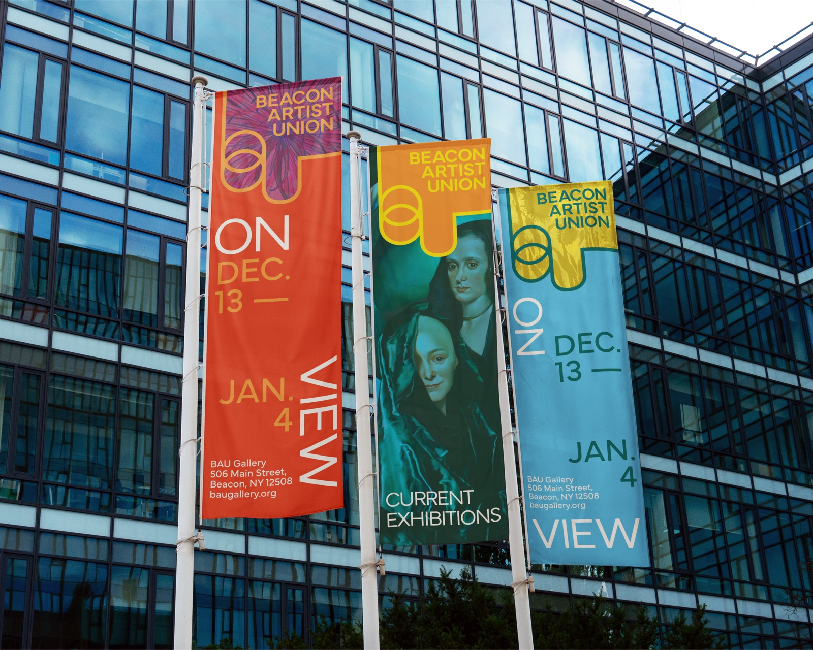
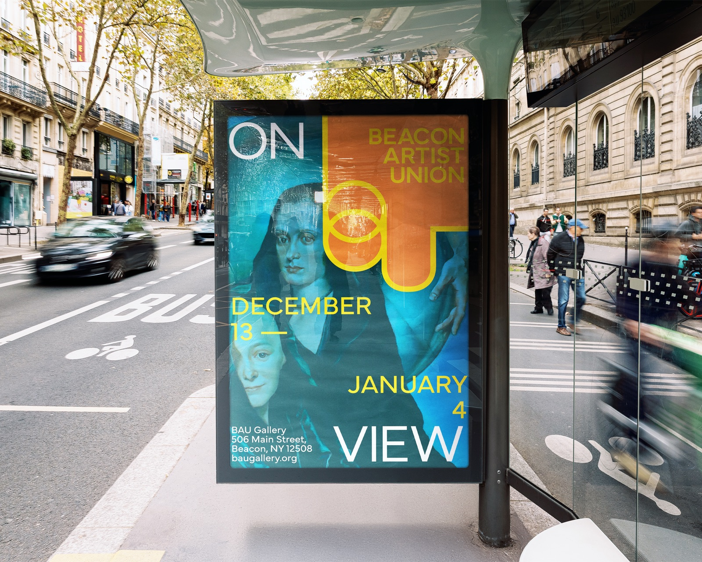
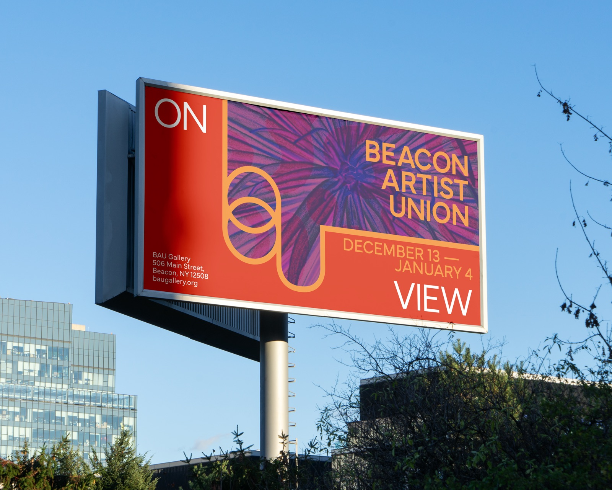
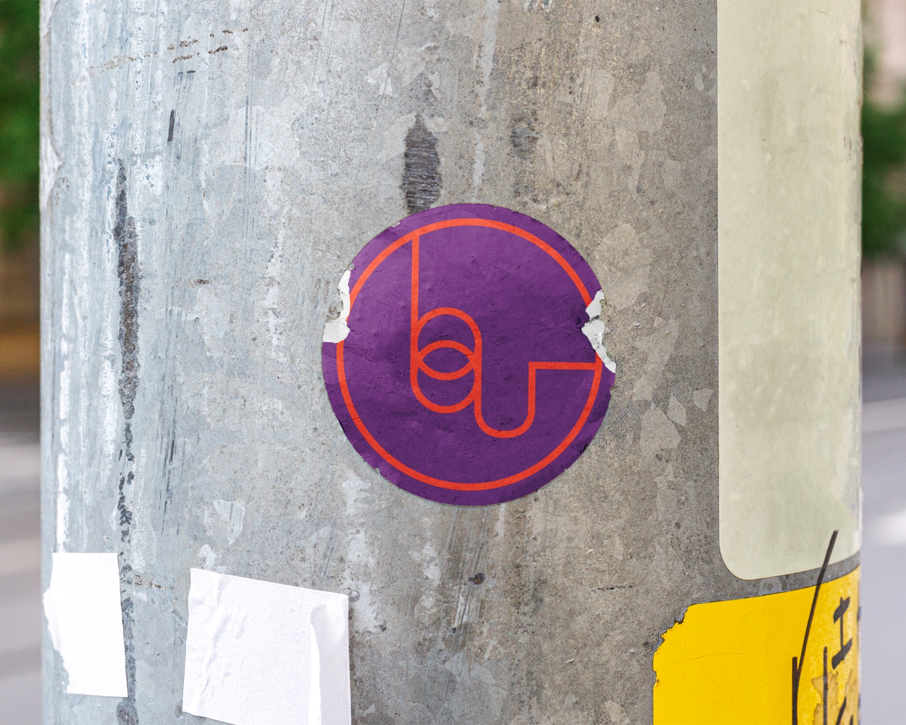
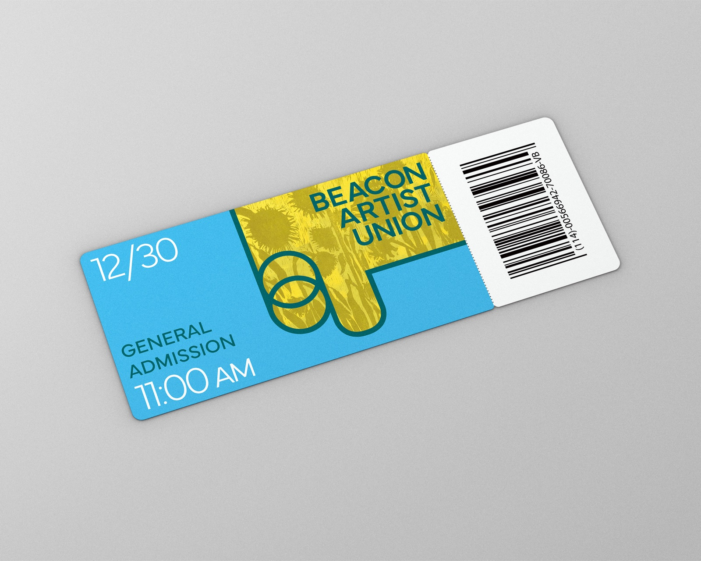
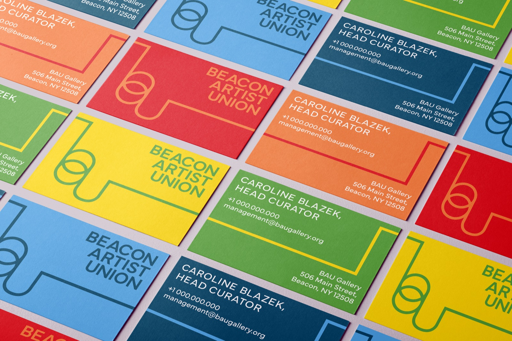
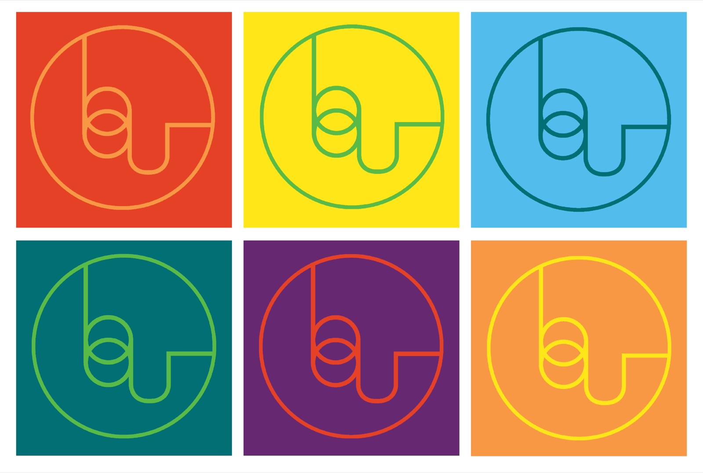
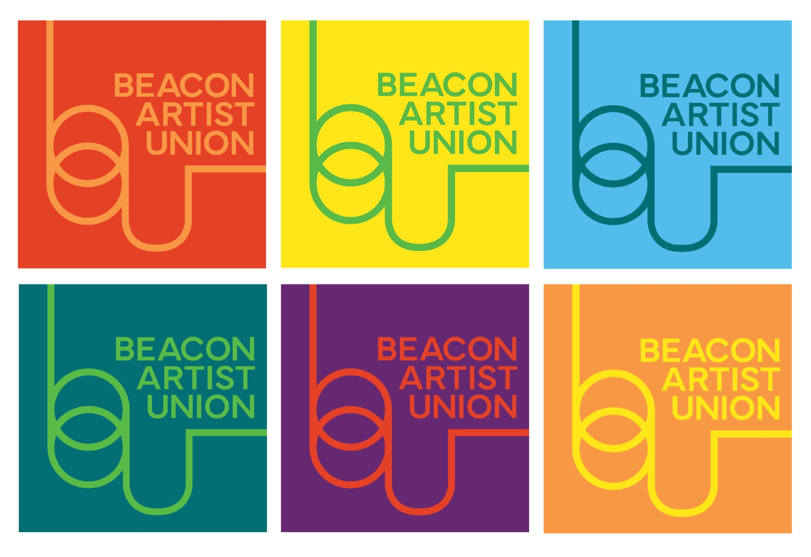

Beacon Artist Union
- Logo Design
- Visual Identity
- Advertising
The Beacon Artist Union (BAU) is an artist-run gallery in the Hudson Valley centered on experimentation, collaboration, and community. I developed a flexible prospective visual identity that reflects the gallery's open approach to contemporary art, creating a recognizable system that adapts across exhibitions, promotional materials, and community-facing applications.


Challenges
With programming that spans diverse artists, disciplines, and approaches, BAU needs an identity that can evolve alongside its exhibitions without losing its recognizable character. Rather than relying on a fixed aesthetic, I aimed to create a flexible visual language that can accommodate a range of artwork while maintaining a consistent presence across physical and digital applications.




Identity & System
I applied the gallery's abbreviated name to a graphic mark that functions as both a logo and a recurring visual element. A vibrant color palette, expressive typography, and shifts in scale and composition create a system with movement and flexibility. Selected gallery works are incorporated through color treatments and overlays, allowing individual artists and exhibitions to inform the identity without compromising its cohesion.


Applications
The identity extends across posters, banners, digital advertising, tickets, stickers, and business cards. Balancing bold graphic compositions with calm presentations of artwork, the system adapts to different formats and contexts while maintaining a recognizable presence throughout the gallery's communications.